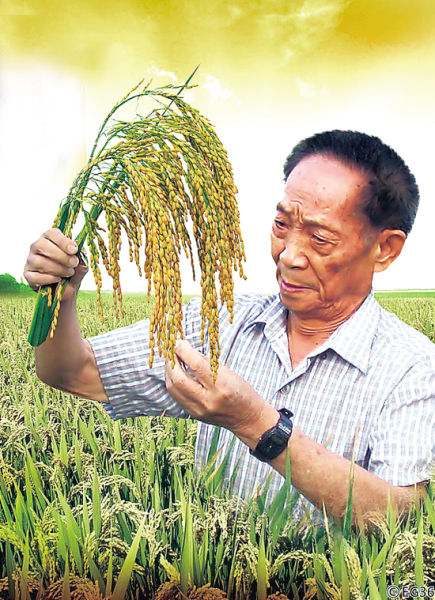

The great person I admire most
As authentic Chineses, rice is such an indispensable food that we tend to eat it every day.You can enjoy it until you're full anytime, as long as you're willing.But do you know who made us live such a happy life？
Yes,the great person is Yuan Nongping. Known as the "Father of Hybrid Rice," he is a renowned Chinese agricultural scientist. Born in September 1930, he dedicated his life to the research and development of hybrid rice, aiming to alleviate food shortages globally.
However, his great achievements were not always smooth sailing.With limited resources and scientific knowledge on hybrid crops, he had to rely on extensive experimentation.What's more,during the Cultural Revolution,he and his team's research findings had been almost completely destroyed.Nonetheless,he still keep going his.Fortunately, his perseverance finally led to the development of high-yield hybrid rice, revolutionizing agriculture.
Today, whenever I eat rice, I always think of him.His spirit inspires me to think of others and persevere in the face of difficulties.I will honor him forever!
